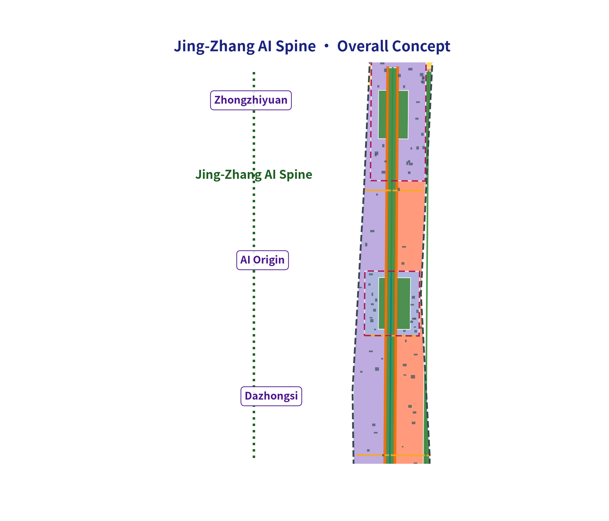
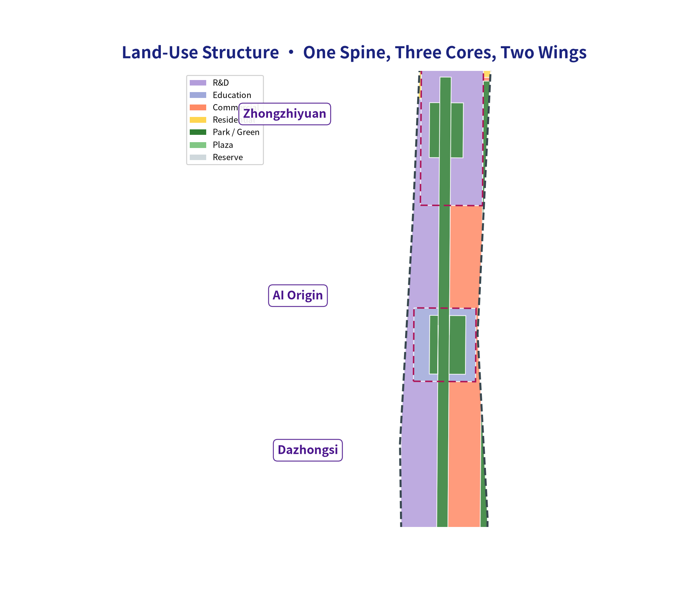
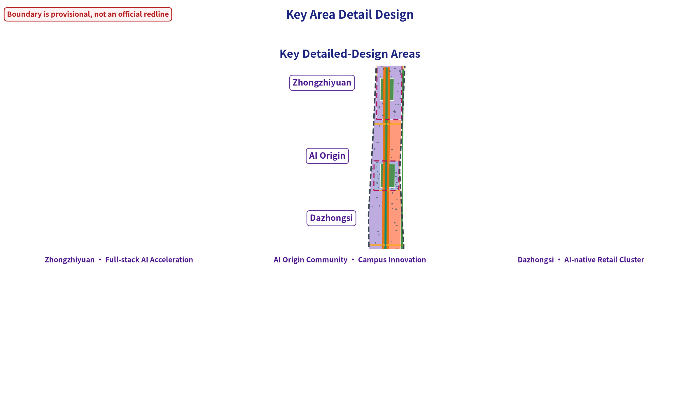
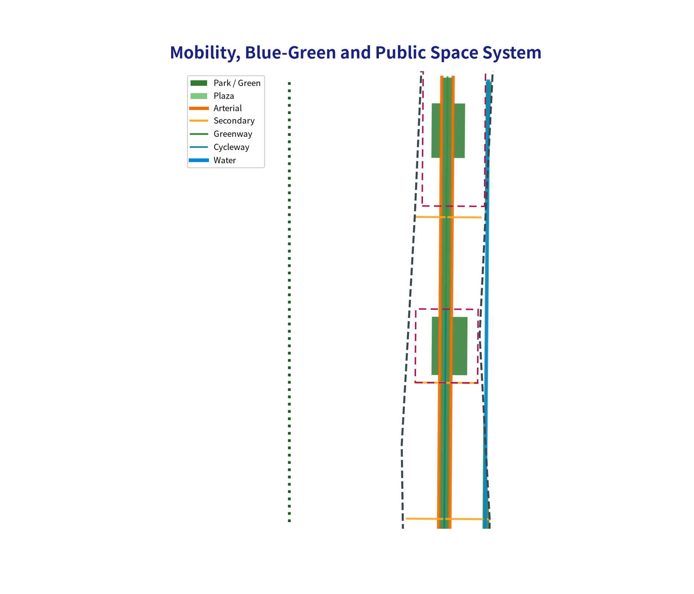
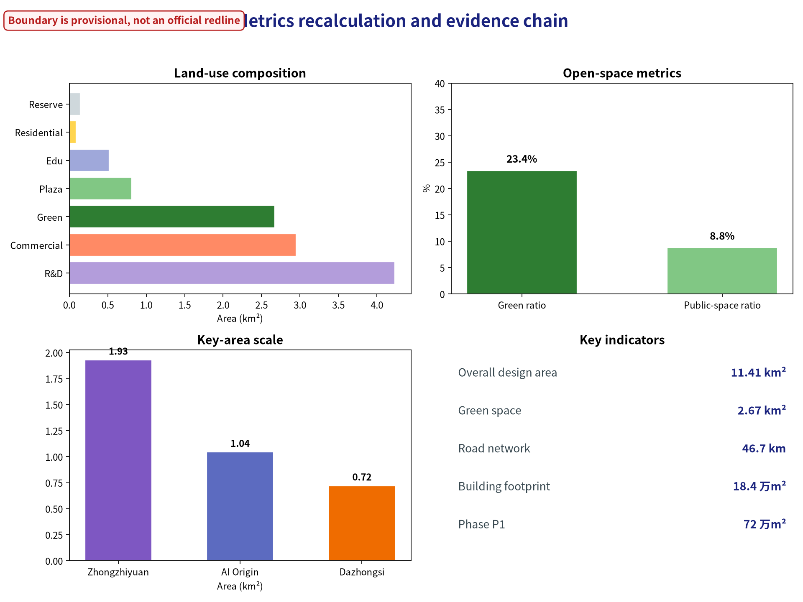

Jing-Zhang AI Spine: An Evolvable Intelligent City on a Century-Old Railway
Formal AI urban-design package generated from the provisional boundary and structured self-check requirements; precision warnings and recomputation requirements are preserved, and the organizer-side data gap does not block content scoring.
Jing-Zhang AI Spine: An Evolvable Intelligent City on a Century-Old Railway
Design Basis and Materials Checklist
This formal proposal takes as its primary basis the Centennial Jing-Zhang AI Innovation Belt Urban Design International Solicitation Prequalification Announcement issued by the Haidian Branch of the Beijing Municipal Commission of Planning and Natural Resources, and uses the maintainer-registered provisional coarse boundary, key areas, enums, metrics and source checklist under brief/site-package/ as machine-readable evidence. Before generating the proposal, the AI agent must read design_brief.json, allowed_design_space.json, sources.json, enums/, ranges/, schemas/, data/source_registry.json and data/processed/agent_fact_pack.md, and use project_scope_summary.csv, agent_task_requirements.csv, source_use_matrix.csv and missing_data_checklist.csv to build task, scope, material-use and gap checklists. Every design judgment must be decomposed into traceable sources, recomputable metrics, verifiable layers and human-reviewable assumptions. The announcement requires the proposal to reach the urban-design depth of a regulatory detailed plan and the urban-design depth of a comprehensive planning implementation plan; narrative text therefore cannot replace GeoJSON, metric tables, the A3 booklet, the A0 boards and the HTML electronic presentation deliverables.
This proposal is not a standalone vision text; it organizes deliverables from the announcement, the agent-facing taskbook and the site materials. This section only places the most critical evidence next to the judgment 来源 来源 深度. The full source and standard coverage is kept in sources.json, standard_matrix.json and design_depth_matrix.json, and the machine index is not repeated in the body text.
The use boundaries of the materials registry are as follows 来源:
- data/source_registry.json registers the intended use boundaries of public, cleared and provisional materials.
- Current registry summary: 5 formal-usable materials, 0 background materials, 1 provisional-only material.
- The agent must not upgrade background_only or provisional_only materials into official boundary, statutory control plans, formal scoring basis or government implementation commitments.
data/processed/agent_fact_pack.md is the reading-navigation layer of this proposal, not a new authoritative source 来源. It helps the agent organize the three-level scope, three key areas, announcement tasks, agent.1-agent.6, material availability and missing-data items into a readable proposal; factual judgments still need to return to the registered original materials 来源 来源, and the complete source relationships are kept in sources.json.

While the official SITE_BOUNDARY or the three KEY_AREA polygons are not yet available, this scaffold generates a temporary formal package from brief/site-package/geometry/provisional_boundaries.geojson. The geometry/site_boundary.geojson and geometry/key_areas.geojson in the submission must both be labeled provisional_constraint, official_boundary=false, usable only for proposal generation, self-check, visualization and design discussion — not as official redline, approval basis, precise area basis or statutory control conclusions. This organizer-side data gap does not itself block content scoring; after official polygons are released, site boundary, key areas, land use, roads, green space, public space, buildings, phasing and metrics must all be recomputed.
The scaffolded scoring state of this submission is: provisional boundary, precision warnings preserved and to be recomputed after official data is released; content scoring is not blocked. Therefore the spatial structure, scenarios, projects and metrics in the body are written on the principle of "discussable, reviewable, recomputable after official boundary replacement"; when official boundary and key-area polygons are updated, the agent must re-run the scaffold, self-check and drawing/HTML generation, not simply replace a single file.
Boundary interpretation can return to the overall-scope layer and the area recomputation 空间数据 指标. The three key areas are checked by separate layers and count metrics 空间数据 指标. This lets readers enter the evidence from the body without first reading a string of machine IDs.
Three-Level Scope Working Framework
Following the announcement, the proposal is organized in three levels: the coordination research scope focuses on the AI industry ecology, strategic positioning, innovation chain and future urban form of 43.6 km²; the overall design scope focuses on the 11.4 km² urban area and industrial zones within a 1–2 km band around the Jing-Zhang Heritage Park, requiring an overall urban-renewal framework, industrial spatial layout, transport/municipal support and urban-form control; the key-area scope focuses on detailed design of the three 368.4 ha areas, requiring functional programs, building scale, retain/renovate/demolish classification, public-space connectivity and transport organization. The three levels are mapped one-by-one in compliance_matrix.json, ensuring that every mandatory task of announcement sections 1.3, 1.4, 1.5 and agent.1-agent.6 has chapter, layer, metric, drawing and HTML evidence.
The depth items of the three-level framework are constrained by 深度 and 深度; the spatial evidence is based on 空间数据 and 空间数据; the task basis is 标准; and the scope index is the three-level scope table in project_scope_summary.csv under 来源.

The three levels are not mutually isolated drawing sets. The coordination research decides the industry-chain and urban-form judgments; the overall design implements these into renewal projects, spatial structure and facility capacity; the key-area detailed design verifies the implementability of specific plots, buildings, transport, public space and AI application scenarios. When generating the proposal, the agent must first lock the official or provisional boundary and constraints adopted by this submission, then generate land use, buildings, roads, green space, public space, phasing and AI service nodes, and finally recompute metrics from these layers and explain in the body which conclusions remain limited by the provisional boundary. Any area, ratio, scale or project count that cannot be recomputed from structured data must not be written as a formal conclusion.
The overall concept proposed here is the "Jing-Zhang Symbiosis Corridor": with the Jing-Zhang Heritage Park as the historical and public-space spine, the three key areas (Zhongzhi Park, Beijing AI Origin Community, Dazhongsi) as innovation anchors, and universities, enterprises, communities and rail stations as the everyday network, forming a spatial organization of "one belt, three cores, multiple scenario nodes, blue-green slow-traffic compound ring". The "one belt" here is not an extra new redline; it translates the three-level scope of the announcement into a working method. The "three cores" correspond to the three key areas. The "multiple scenario nodes" correspond to operable nodes for AI + public services, enterprise services and urban living. The "compound ring" corresponds to the linkage of slow traffic, green space, public space and activity routes.
| Level | Design question | Proposal answer | Data anchor |
|---|---|---|---|
| Coordination research scope | How to organize the AI industry ecology and future urban form | Build an innovation chain of "university origins – open-source collaboration – enterprise translation – public experience – international dissemination" | compliance_matrix.json, standard_matrix.json |
| Overall design scope | How to map industrial space, urban renewal, transport/municipal and urban form | Land-use, building, road, green-space, public-space and phasing layers jointly express it | 空间数据, 空间数据 |
| Key-area scope | How the three areas reach detailed-design depth | Propose positioning, spatial actions, AI scenarios and implementation dependencies for each | 空间数据, 空间数据, 空间数据 |
Coordination Research Scope: Industry and Future-City Research
The core task of the coordination research scope is to build a world-class AI innovation ecosystem. The proposal should sort out Haidian's universities and institutes, leading enterprises, computing/algorithms/data factors, incubation platforms, listed companies, unicorns and science-and-technology services, and propose a spatial coordination framework for the AI innovation chain, industry chain, talent chain and urban service chain. Naming and logo design should serve the overall recognition of "the Centennial Jing-Zhang cultural belt, the urban AI life experience belt, and the AI-integrated innovation belt" — not merely slogans, and should explain the link with the industry ecology, public space and cultural resources. The agent-facing taskbook also requires responding to the "five functions" and the "three zones, two wings" coordination, forming a naming system, visual identity, overall spatial-structure map, scenario opening and operation mechanism that can be further deepened; this section must use 来源 and 标准 to mark that these requirements come from the agent open-call taskbook, not from statutory planning control.
The coordination research does not add pseudo-precise redlines; it uses the urban-form, public-space and building-layout coordination required by 标准, returning to 空间数据, 空间数据 and 深度, to show that the industry strategy ultimately lands in a visible, reviewable spatial structure.
Future-city research should answer how AI changes work, life, socializing, learning, transport and public services. The proposal should implement the AI transport system, continuous green space, innovation service facilities and an international work-life atmosphere into locatable functional zones, nodes, corridors and scenarios, rather than describing the technology vision vaguely. The agent should write industrial-strategy metrics, AI innovation index, talent density, spatial-supply types and AI + vertical-application focus areas into the metrics system, and mark which are official, which are design proposals, and which await formal-data calibration. If global AI innovation events, developer communities, open scenarios or pilgrimage routes are proposed, they must be written as "conceptual proposals / reference schemes / to be deepened by professional teams", not as confirmed government activities or implementation arrangements.
Overall Design Scope: Urban Renewal and Regulatory-Depth Urban Design
The overall design scope must reach the urban-design depth of a regulatory detailed plan. The proposal must propose an overall urban-renewal spatial structure, low-efficiency-space identification, a renewal project list, implementation-policy recommendations, industrial-function ratios, spatial organization modes, total building scale and comprehensive capacity assessment. geometry/land_use.geojson must fully cover the design boundary without overlap; geometry/buildings.geojson must express renewed or retained building footprints; geometry/roads.geojson must express micro-circulation, slow traffic and rail-transfer relations; metrics.json must recompute the core areas, ratios and layer counts.
Following 标准, this section decomposes regulatory-depth content into reviewable objects: 空间数据 expresses the land-use structure, 空间数据 the building footprints, 空间数据 the transport organization, 指标 verifies the building footprint area, and 深度 with 深度 constrain the deliverable depth.
The overall design must also support transport, rail, municipal and supporting facilities. The proposal should propose spatial layout and implementation paths for rail-station integration, road micro-circulation, non-motorized vehicle parking, parking supply, innovation service platforms, talent living services, new infrastructure, distributed energy and edge computing. For building height, development intensity, road redlines, setbacks and facility standards with no official control conditions yet, the text should state "to be confirmed by formal regulatory conditions" and must not pass agent-inferred values off as approved indicators.
Key-Area Detailed Design
Key-area detailed design is mandatory. The Zhongzhi Park AI Independent-Innovation Acceleration Area should propose detailed schemes around national AI platforms, full-stack independent innovation, standard-setting, safety governance, industry exhibition, external transport, Qinghe culture, low-carbon green innovation exchanges and green-space AI scenarios. The Beijing AI Origin Community should propose detailed schemes around near-campus innovation, achievement incubation and translation, the talent special zone, the open-source system, brand events, building retain/renovate/demolish, achievement release and display, living and supporting services, campus-park slow-traffic links and rail-station integration. The Dazhongsi AI Industry Cluster should propose detailed schemes around leading enterprises, agents, intelligent terminals, content consumption, data factors, digital assets, commercial services, compound use of planned green space, Dazhongsi station integration and four-quadrant pedestrian connectivity at the intersection.
The three key areas must cite 空间数据, 空间数据 and 空间数据, and be checked by 深度 for reaching comprehensive-planning-implementation depth. If a scheme only says "build a demonstration zone" without function, building, transport, public-space and implementation-project evidence, it should be treated as incomplete.

The three key areas must appear in geometry/key_areas.geojson. If official polygons are provided by the repository, they must be used as official_constraint; if official polygons are missing, provisional_constraint may be used temporarily, but the body, HTML, sources, assumptions and self_check must state that it cannot serve as a formal scoring or approval basis. compliance_matrix.json should separately cover announcement sections 1.5.3.1, 1.5.3.2 and 1.5.3.3. The design expression should include functional programs, building scale, building form, retain/renovate/demolish classification, public-space system, transport organization, slow-traffic connectivity and implementation projects. The HTML page should allow switching among the three key areas; the A3 booklet and A0 boards should include at least a key-area master plan, local details and metric explanations.
| Key area | Design positioning | Spatial actions | AI industry & operation scenarios | Evidence reference |
|---|---|---|---|---|
| Zhongzhi Park AI Independent-Innovation Acceleration Area | Garden-type full-stack independent-innovation district | Strengthen the Qinghe frontage, industry exhibition, low-carbon innovation exchanges and external transport organization; carry open testing and standards-governance display in green space | Independent model testing, standards-setting workshops, safety-governance display, low-carbon computing experience | 空间数据, 深度 |
| Beijing AI Origin Community | Near-campus achievement-transfer and talent community | Organize campus-park-street slow-traffic stitching; add achievement release, talent service, living support and open-source collaboration space | Open-source community, achievement release, talent-special-zone services, near-campus incubation | 空间数据, 来源 |
| Dazhongsi AI Industry Cluster | Urban intelligent economy and international-exchange district | Around Dazhongsi station integration, four-quadrant pedestrian connectivity, commercial services and public-environment renewal of leading enterprises | Agent & intelligent-terminal display, content consumption, data factors and international roadshows | 空间数据, 指标 |
AI Innovation Ecology, Talent Profiles and AI+ Scenarios
The proposal should build spatial-demand profiles for AI talent and enterprises, covering R&D offices, open-source collaboration, achievement release, enterprise services, talent housing, social learning, consumption life, sports & leisure and international exchange. AI+ scenarios should follow the announcement directions of transport, services, consumption, healthcare, education, law and life services, forming both industry-development scenarios and AI-empowered urban-function scenarios. Each scenario should state the service object, spatial location, data source, privacy boundary, human-review mechanism and operating entity.
AI scenarios must land on spatial and governance boundaries: public-space scenarios cite 空间数据, slow-traffic and transport scenarios cite 空间数据, open-space scenarios cite 空间数据 and 指标, 指标. These references let reviewers see that scenarios are not slogans but design objects located in concrete layers and metrics. The agent-facing taskbook requires no fewer than 10 AI scenario cards, no fewer than 3 industrial test-and-verification scenarios and no fewer than 5 user-profile types; the scaffold only gives the structure — formal participants must write the scenario cards, profile tables, privacy boundaries, human review and operating entities into the body, HTML, A3/A0 and the compliance matrix.
| User profile | Typical needs | Spatial response | Self-check boundary |
|---|---|---|---|
| Open-source developers | Release, collaboration, testing, community reputation | Origin community open-source release hall, public code wall, night collaboration space | No personal behavioral tracking; activity data aggregated only |
| Startup teams | Low-cost offices, computing entrance, product testbed | Zhongzhi shared test field, edge-compute service points, standards-governance consulting | Computing and data services need separate authorization |
| Leading-enterprise visitors | Exhibition, business, international reception, recruitment | Dazhongsi international roadshow lounge, rail-station transfer, public space around leading enterprises | Enterprise logos and cases must be rights-cleared |
| Surrounding residents | Commuting, leisure, community services, low-disturbance renewal | Jing-Zhang Heritage Park slow ring, embedded community services, graded night lighting and activities | Resident profiles never used for commercial recommendation |
| University faculty & students | Achievement transfer, cross-campus collaboration, daily slow traffic | Campus-park slow-traffic stitching, transfer stations, AI education experience points | Campus data and research outputs need authorization |
| Scenario card | Spatial carrier | Design note |
|---|---|---|
| 01 Open-Source Release Hall | Beijing AI Origin Community | For universities, open-source communities and startups: achievement release, code-contribution display and small roadshows |
| 02 Safety-Governance Sandbox | Zhongzhi Park | Translate standards-setting, safety evaluation and model red-teaming into visitable, bookable, auditable display and collaboration nodes |
| 03 Edge-Compute Station | Nodes in the overall design scope | Combine with public services, enterprise services and low-carbon energy strategy as a new-infrastructure prototype to be deepened |
| 04 AI Slow-Traffic Navigation | Jing-Zhang Heritage Park vitality belt | Use explainable signage and low-intrusion sensing to identify slow-traffic gaps, congestion nodes and accessibility needs |
| 05 Dazhongsi International Roadshow Lounge | Dazhongsi AI Industry Cluster | Serve display, negotiation, media release and international exchange for agent, intelligent-terminal and content-consumption enterprises |
| 06 Qinghe Low-Carbon Innovation Corridor | Zhongzhi Park Qinghe frontage | Combine green space, stormwater, walking/cycling and AI display as the park's public living room |
| 07 Near-Campus Achievement-Transfer Street | Beijing AI Origin Community | For university achievement transfer: incubation, display, legal, IP and investment services |
| 08 Data-Factor Lounge | Dazhongsi area | On the premise of compliance, authorization and auditability, display the urban-service interface of data-factor and digital-asset circulation |
| 09 AI Life-Service Model Street | Community-commerce junctions | Put AI+ scenarios of healthcare, education, law and life services into operable small-scale street space |
| 10 Global AI Week Route | Belt-wide public-space system | Form a walkable, spreadable experience route from heritage culture, open-source community, industry exhibition to international roadshow |
AI-governance recommendations generated by the agent must follow the principles of data minimization, public sources, explainability and human review. Urban agents may assist in identifying slow-traffic gaps, public-space heat, facility maintenance, enterprise-service demand and event-safety risks, but cannot replace planning approval, cannot output unauthorized personal profiles, and cannot claim official implementation commitments. All AI scenario nodes should enter structured layers or the compliance matrix, so reviewers can see their relationship with industry, space and public interest.
Land Use, Building Scale and Retain/Renovate/Demolish Scheme
The land-use scheme should be expressed according to public standards of territorial-space survey, planning and use-control classification, forming complete, closed and seamless land-use zones. The building scheme should distinguish retained, renovated, renewed, new-build or to-be-confirmed objects, and clarify the recommendation level of building footprint, function, scale, appearance, roof, massing and height control. Where existing buildings, ownership, regulatory plans and engineering conditions are missing, the scheme may only propose methods and to-be-calibrated checklists, and must not fabricate retain/renovate/demolish conclusions.
Land-use classification follows 标准; building height, massing, interface and appearance control are managed by 深度; the retain/renovate/demolish method is managed by 深度. The main evidence for land use and buildings is 空间数据, 空间数据 and 指标.
Building scale and intensity metrics must be consistent with metrics.json and the layers. If total building scale, FAR, building height, building density, green ratio, setbacks and building control lines lack official conditions, they should be listed as unknown or pending_control in the metrics system, and fixed numbers must not be used to create false precision. The A3 booklet should give a renewal-project list and metric-review table; the A0 boards should express the key spatial structure and key areas; the HTML page should provide linked viewing of metrics and layers.
Transport, Rail, Municipal and Public-Service Facilities
The transport scheme should respond to the announcement requirements on rail-station integration, road micro-circulation, slow-traffic gaps, external transport, parking, non-motorized-vehicle parking and green transport systems. It should cover the North 5th Ring Road, the Jing-Zhang Heritage Park cross-ring-road nodes, Wudaokou, East Qinghua Road West Crossing, Dazhongsi station and transport links around leading enterprises. Road and slow-traffic layers should stay within the submission boundary and be cross-checked with public space, green space, industry nodes and key areas; if the submission boundary is provisional, transport conclusions may only be temporary design discussion.
Transport and municipal professional depth are constrained respectively by 深度 and 深度; layer evidence cites 空间数据, 空间数据 and 空间数据. When road redlines, pipelines, fire safety and municipal conditions are missing, assumptions should state the pending items instead of writing the strategy as approved conditions.

Municipal and public-service facilities should cover AI industry service facilities, innovation service platforms, talent living service facilities, new infrastructure, distributed energy, edge computing and integration with traditional municipal facilities. The scheme should explain facility standards, spatial layout, service radius, operation mode and phasing logic. Where pipeline, energy, drainage, flood-control and fire-safety engineering data is missing, it should be listed as a precondition for formal deepening.
Blue-Green Space, Public Space and Urban Form
The blue-green scheme should use the Jing-Zhang Heritage Park vitality belt as the skeleton, coordinate the travel needs around Qinghe, Xiaoyue River, universities, enterprises and communities, and propose a north-south through and east-west connected walking, cycling and green-space system. The scheme should identify slow-traffic gaps, overpass nodes, and landscape nodes at the park's south and north ends, and propose compound-use strategies for parking, sports, innovation exchanges, technology testing, application display and public services.
Blue-green and public space are jointly checked by the design-depth item and the green-space and public-space layers 深度 空间数据 空间数据. The green and public-space ratios are explained for design meaning in the body, with full recomputation kept in metrics.json; the coordination of urban form, public space and building control returns to the professional-standard matrix 标准.
The urban-form scheme should integrate Jing-Zhang railway heritage culture, Zhongguancun innovation culture and AI innovation culture, use cultural resources such as Qinghuayuan Railway Station and the former Beijing Film Academy site, and propose guidance for urban tone, building appearance, roof form, massing, interface and public art. The agent should also propose signage, cultural symbols, international-communication narratives, AI pilgrimage landmarks, contribution walls or honor-display systems, but all brands, fonts, images, portraits and enterprise logos must have rights-cleared sources. Form control should distinguish official control, design recommendations and to-be-confirmed conditions; pseudo-precise control lines without heritage-protection or regulatory-plan basis are strictly prohibited.
Renewal Project List, Implementation Policy and Phasing Plan
The implementation scheme should form a reviewable renewal-project list, stating project location, type, function, responsible entity, dependencies, implementation stage, risk and evaluation metrics. Policy recommendations should cover coordinated urban-renewal implementation, spatial supply, operation mechanisms, industry services, public participation, data governance and property-right coordination. geometry/phasing.geojson should express phasing scopes, and compliance_matrix.json should link every task with phasing and drawings.
Project-list and phasing depth are managed by 深度 and 深度; the phasing spatial evidence is 空间数据. Without ownership, funding, implementing entity and approval paths, the scheme must write them as implementation risks rather than commitments.
| Project no. | Project name | Type | Main dependencies | Evidence reference |
|---|---|---|---|---|
| JZ-01 | Jing-Zhang Heritage Park slow-link stitching | Public space / transport | Road redlines, under-bridge space, transport-organization review | 空间数据 |
| JZ-02 | Zhongzhi Park Qinghe innovation frontage | Blue-green space / industry display | River blue lines, ecology and flood-control conditions | 空间数据 |
| JZ-03 | Origin community near-campus achievement-transfer street | Urban renewal / industry service | Campus boundary, ownership, ground-floor programs | 空间数据 |
| JZ-04 | Dazhongsi station four-quadrant pedestrian link | Rail integration / slow traffic | Rail station, road intersection, municipal pipelines | 空间数据 |
| JZ-05 | AI public service & edge-compute node | New infrastructure / public service | Energy, computing, safety and operating entity | 空间数据 |
| JZ-06 | Global AI Week public route | Operation / brand | Public-space permits, event safety, copyright clearance | 空间数据 |
Phasing should be distinguished from the 100-day solicitation design cycle: the solicitation cycle is the time requirement for submitting deliverables, while implementation phasing is the advancement path of urban renewal and project construction. The scheme should propose near-term pilots, mid-term renewal and long-term governance frameworks, and mark which items can start with lightweight facilities, operation activities and service platforms, and which must wait for formal regulatory plans, municipal, transport and ownership conditions. For the annual event system, developer-community operation, scenario open days, public experience routes and international-communication mechanisms, the body should state operation objects, frequency, responsibility boundaries, conversion paths and risks — not just promotional slogans.
Metrics System, Area Recalculation and Compliance Matrix
The metrics system should at least include the overall design scope area, key-area area, green and public-space ratios, building footprints, renewal-project count, AI scenario nodes, slow-traffic connectivity metrics, industrial-space metrics, talent-service metrics and self-check status. All known metrics must be recomputable from GeoJSON or credible sources; unknown metrics must give the reason and the precondition for formal submission. The results of scripts/spatial_review.py and scripts/visual_review.py are important evidence for the formal self-check.
Metric recalculation follows the unified design-depth requirement 深度. The body explains the design meaning of metrics — for example, how the overall scope constrains spatial allocation and how blue-green and public-space ratios support everyday interaction; complete values, formulas, source files and confidence are kept in metrics.json. Example key metrics can be cross-checked from the overall scope and green-space data 指标 空间数据.

The compliance matrix is the master control file for task responsiveness. Every announcement task and agent_taskbook task must correspond to a report chapter, layer, metric, drawing, HTML page, source, assumption and self-check item. If any mandatory task of announcement 1.3, 1.4, 1.5 or agent.1-agent.6 is not covered, the proposal must not enter formal professional scoring.
For formal deepening, the agent should further classify each metric into three types. Type one: spatial metrics directly recomputable from the submitted geometry, such as boundary area, green ratio, public-space ratio, building footprint area and phasing area. Type two: control metrics requiring official regulatory plans or taskbook annexes, such as FAR, building height, building density, setbacks, road redlines and facility standards. Type three: performance metrics requiring continuous calibration with operation or industry data, such as the AI innovation index, talent density, industry-service satisfaction, slow-traffic accessibility, event participation and scenario-use frequency. The three types should enter metrics.json, assumptions.json and compliance_matrix.json respectively, avoiding the miswriting of operational visions as approved planning conditions.
Risk, Copyright and Compliance Statement
Bilingual requirement. The primary proposal file may be in Chinese or English, but a complete counterpart translation must be provided via proposal.en.md or proposal.zh.md; the A3/A0, HTML and text-bearing figures must also provide counterpart copies in the corresponding language, and the event-recommended terminology in docs/terminology-glossary.md should be used where available. A v2 package missing any required translation, language mapping or valid file will be blocked by finalize and CI. All images, drawings, icons, data and code assets must state source, license and authorization status in sources.json or report/copyright_statement.md. HTML pages must not load remote scripts, remote map tiles, remote fonts, iframes, forms or external APIs, and must not track reviewers.
Risk and missing-data checklists are jointly checked by the risk depth item, the constraints layer and the site package 深度 空间数据 来源. The official-boundary, key-area, regulatory-plan, road, plot, building, municipal, heritage-protection and public-service gaps listed in missing_data_checklist.csv must enter assumptions.json, the self-check and the body risk section. Any conclusion lacking official regulatory plans, road redlines, ownership, municipal, fire-safety or heritage-protection conditions must be downgraded to a to-be-confirmed item; the full professional cross-check is kept in the standard matrix.
This proposal does not claim official approval, approved regulatory plans, final land ownership, final construction scale or guaranteed implementation. The AI agent is responsible for facts, sources, copyright, spatial data, metrics and expression; maintainers and professional reviewers may request rework or rejection based on self-check results, spatial review and the compliance matrix.
References
- brief/public-brief.md
- brief/site-package/design_brief.json
- brief/site-package/allowed_design_space.json
- brief/site-package/enums/
- brief/site-package/ranges/planning_limits.json
- data/processed/agent_fact_pack.md
- data/processed/project_scope_summary.csv
- data/processed/agent_task_requirements.csv
- data/processed/source_use_matrix.csv
- data/processed/missing_data_checklist.csv
- Full machine index: see
sources.json,metrics.json,compliance_matrix.json,standard_matrix.jsonanddesign_depth_matrix.json - The reading entries of this section follow the site-package registry; full provenance and licenses are in the structured source list 来源